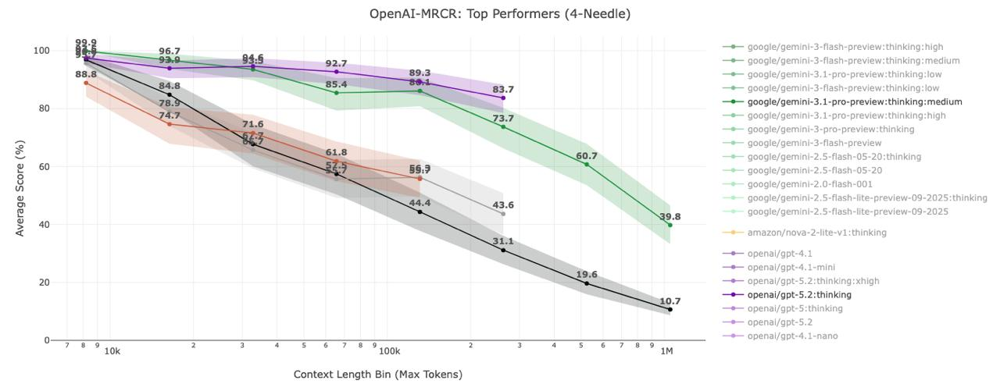

Instant Grep (Beta) — индексация для быстрого поиска. Данные хранятся локально
Docs — подключённая документация: gotd, Dify. Используется через @Docs в чате
+ Add Doc — добавить URL документации для индексации
14
Золотой workflow
Как правильно работать с Cursor
Rules
→
Ask
→
Plan
→
Agent
→
Ask
01
Rules — настрой правила проекта
.cursor/rules — стек, конвенции, структура. Один раз — работает на все сессии
02
Ask — собери контекст
Спроси агента о кодовой базе: что замокано, где типы, какая структура
03
Plan — декомпозиция задачи
Верхнеуровневое описание → агент разбивает на шаги. Ревью → Build Plan
04
Agent — выполнение
Агент выполняет план. Ревью каждого diff. Checkpoint → откат если что
05
Ask — итерация
Проверь результат. Задай уточняющие вопросы. Новый цикл если нужно
15
Первый шаг: Rules
Прежде чем что-то делать — настрой правила проекта
Что включить
Стек (фреймворки, ORM, DB). Структура проекта. Ключевые команды (dev, build, lint). Стиль кода (TypeScript strict, async/await).
Чего НЕ включать
Общие советы по программированию. Длинные style guides (для этого есть линтер). Вещи которые AI и так знает (npm, git).
Best Practices
До 50 строк. Ссылайтесь на файлы (@src/routes/users.ts) вместо копирования кода. Создание: /create-rule
4 типа
Always Apply — всегда. Globs — по маске файла. Agent-decided — AI решает. Manual — по @упоминанию.
16
Промпт: создание rules
Агент сам создаст правила по кодовой базе
// В чате Cursor (режим Agent)
Проанализируй текущий проект и создай
.cursor/rules/project.mdc с alwaysApply: true.
Включи:
- Стек (фреймворки, ORM, база данных)
- Структуру проекта (где что лежит)
- Команды для запуска и сборки
- Стиль кода и конвенции
Правило должно быть до 50 строк.
Не копируй код — ссылайся на файлы-примеры.
17
Режим: Ask
Спроси перед тем как делать. Файлы не меняет.
// Промпт для исследования кодовой базы
Проанализируй текущий проект и ответь:
1. Какой стек используется?
2. Какая структура проекта (папки, ключевые файлы)?
3. Где данные замоканы, а где реальные?
4. Какие API endpoints есть и что они делают?
5. Какие зависимости установлены?
6. Есть ли тесты? Если да — какой фреймворк?
Формат: краткий обзор, потом детали по каждому пункту.
Первый шаг после открытия нового проекта в Cursor
18
Режим: Plan
Агент декомпозирует задачу. Ты ревьюишь и правишь план.
// Промпт для Plan mode — верхнеуровневый
Оживи прототип. Сейчас данные замоканы. Нужно:
- Бэкенд с реальной базой данных
- Интеграция с Dify API для генерации тест-кейсов
- Фронтенд работает с реальными данными вместо моков
Три строки. Остальное Plan сам разложит. Потом → Build Plan
SLIDE 12 — КОНТЕКСТ В CURSOR
======================================= -->
19
Контекст — главное оружие
20
Контекст is King
Раньше инжиниринг был на уровне кода, сейчас на уровне контекста для LLM
Контекстное окно ограничено — управляйте контекстом как оперативной памятью
Внимание модели падает с увеличением контекста — каждый лишний токен = шум, ухудшающий качество

21
Hooks
Автоматические скрипты на события агента
Что это
Скрипты в .cursor/hooks.json, которые запускаются на события: после правки файла, перед командой, в начале сессии.
Ключевые события
sessionStart — начало сессии. afterFileEdit — после правки файла. beforeShellExecution — перед командой. stop — завершение.
Пример: автокоммит
sessionStart → git add -A && git commit. Каждый новый чат начинается с чистого checkpoint. Всегда можно откатиться.
Пример: автолинт
afterFileEdit → pnpm lint. Агент видит ошибки линтера и сам исправляет. Код всегда компилируется.
22
Режимы: Agent & Debug
Agent
Автономный режим. Читает файлы, пишет код, запускает команды в терминале. Основной режим для вайб-кодинга.
Checkpoints: Cursor сохраняет снимок перед каждым изменением. Всегда можно откатиться.
Debug
Анализ ошибок. Вставляешь ошибку или стектрейс — агент находит root cause и предлагает fix.
Лайфхак: если ошибок нет при демо — сломай env-переменную, покажи как Debug починит.
23
MCP
Model Context Protocol — расширения для AI-агента
Что это?
Стандартный протокол, который даёт AI-агенту доступ к внешним инструментам: базы данных, API, файловые системы, браузер.
Как подключить
.cursor/mcp.json — один JSON-файл. Cursor автоматически подхватит все описанные серверы и покажет доступные инструменты.
Полезные MCP
🗄 PostgreSQL — агент пишет и проверяет запросы
🌐 Browser — агент видит UI приложения
📋 Figma — агент читает макеты
📁 Filesystem — расширенная работа с файлами
Результат
Агент не просто пишет код — он проверяет результат. Написал SQL → выполнил → увидел ошибку → исправил. Полный цикл.
24
Skills
Переиспользуемые процедуры для агента
Что это
Markdown-инструкции в .cursor/skills/name/SKILL.md. Пошаговые процедуры: «как делать X». В отличие от rules (что делать), skills — это как делать.
Когда загружается
Агент видит name + description всех skills. Полный текст загружается когда релевантно или по /skill-name. Прогрессивно — не тратит контекст зря.
Что внутри
YAML frontmatter (name, description) + markdown. Может включать scripts/, references/, assets/ — загружаются по требованию.
Создание
/create-skill в чате — Cursor проведёт через формат. Или вручную: mkdir .cursor/skills/my-skill + SKILL.md
25
Субагенты
Параллельные агенты со своим контекстом
Зачем
Контекстная изоляция: шумный вывод остаётся в субагенте. Параллельность: несколько задач одновременно. Специализация: свой промпт и модель.
3 встроенных
Explore — поиск по коду (быстрая модель, параллельно). Bash — цепочки shell-команд. Browser — скриншоты и тесты UI.